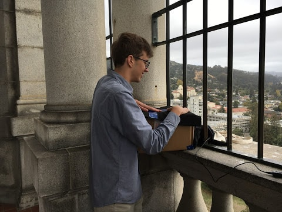
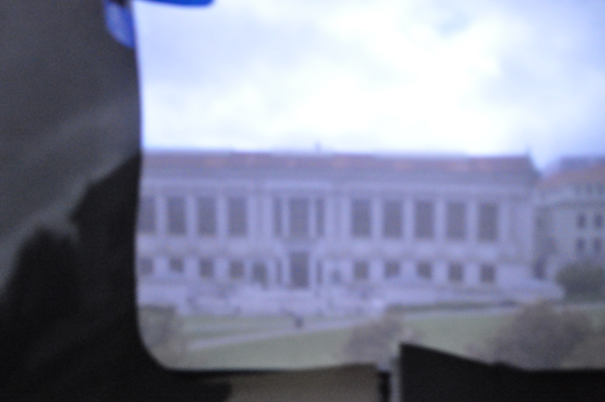
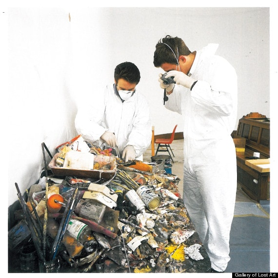

Computer Science students capture graphic scenes across their college campus
in stunning exposé
All Was Captured With A Pinhole Camera
THE PHOTOGRAPHERS, STEVEN TRAVERSI AND ROSS TEIXEIRA, built their pinhole camera using a cardboard box, duct and electical tape, construction paper, felt, and foam. The inside of the cardboard box was lined with the felt, which rounded the corners nicely. The pinhole itself was pierced into the construction paper. The felt was used to drape over the closed box to ensure no unwanted light entered through undetected cracks. The duct tape held everything together, and the electrical tape was used inside of the box because of its pitch black color (to avoid glare).
Two constructions were tried; one where the camera was placed on top of the box and looked down onto a paper resting at a 45 degree angle; the second where the camera looked through the box from the side. Both constructions are pictured to the right. The photographers decided to use the second model after some trial and error. Some advantages of the second model are that it is much easier to focus the camera on the paper, and the flat photo plane is more asthetically pleasing.

TOP: The final construction. BOTTOM: Box in use, covered with cloth
iPhone Woes
Initially, the dynamic duo were misled by rumors that an iPhone was sufficient for pinhole camera shooting, costing them a day's worth of time. "Without a DSLR of our own, we had thought our free 'LongExpo' app was all we needed in order to capture large amounts of light and create beautiful pinhole images," Ross explained in a response to our inquiry. "However, we soon realized that Apple gives Apps no real control over the camera's shutter speed and aperture; instead, Apps fake "long exposures" by overlaying successive images on top of each other using complex, albeit useless, algorithms. The result is a nice motion blur, without the additional brightness of a real long exposure. It's also possible that the iPhone camera sensor is simply not powerful enough, but in the end we could only produce black photos."
A dark stop sign with iPhone
A dark tree with iPhone
Warning future users
"The next day, we borrowed a Nikon D5000 from a friend, and immediately our pinhole photos came to life..."
Exclusive: Pinholes Detailed
Traversi and Teixeira reportedly first tested their pinhole camera with three separate pinhole radii. Comp Photo Times was granted exclusive access to six alpha photos taken during Traversi and Teixeira's testing phase. Each used f/5 and 2000 ISO. At the end of the period, they found that the images grew brighter, yet generally duller and blurrier as the size of the pinhole increased. In fact, the 5mm photos were completely white until the duo shortened their exposure time to 5 seconds. They agreed on the 2.5mm pinhole as the optimal combination of the two, and used it for the rest of their photos. Their first set of photos is pictured below. The scene in question is Doe Library at UC Berkeley.

0.5mm2.5mm5.0mm
Their second set of photos is of bikes in front of the Campanile.
0.5mm2.5mm5.0mm
If you look carefully, you might notice a streak of light appearing from the bottom of the 2.5mm photo of the bikes (actually the top of the box). This mysterious box leakage confounded the photographers for nearly an hour, as they tried covering every inch of the box to no avail. The image shown is the best image that was captured, and after the duo moved onto new scenes the leak disappeared forever. It remains an unsolved mystery.
Camera Hogs
The two young, intrepid photographers took various self-portraits throughout the week, intending to use them for social media profiles.
The photos were taken outside Moffit Library and the Campanile.
In addition, the photographers documented their pinhole adventures on an iPhone video, which were uploaded to Ross' YouTube page.
Creativity Shines: Local Museum Showcases Berkeley Students' Artistic Vision
The magnificent pieces are pictured below, all with f/5 and 2000 ISO:
A crane outside of Moffit Library
Steven and Ross in front of Sather Gate
The top of a red car
An attempted indoor shot during a discussion section
"I'm especially fond of the vivid crane and car," Steven reportedly remarked.
Has mother nature gone too far? Curious light entertains at berkeley residence
Several residents reported witnessing bright balls of light entering through windows, ricocheting off walls and causing all sorts of havoc. The local photographers wasted no time in documenting the mysterious phenomenon. The following images were taken with exposure times of 30s, f/8, and the lowest possible ISO. Local theories for the source of the lights include ball lightning, nano drones and the use of psychadelics.
Ross En-Cubed
Bright Melodies
Fancy Livin'
Steven the Cyclone
Zipline
Sucked Into the Vortex
Surf's Up
Wolverine or Renaissance Ruff?
SHADOWS CAST DOUBT ON PHOTOGRAPHERS' UNDERSTANDING OF PHYSICS
Occluded light makes... light?
Their work nearly complete, the two photographers repurposed their pinhole camera for an interesting experiment. Here, a desktop totem was placed inside the camera box and backlit with phone flashlights and handheld lasers. The box was sealed, and light was only allowed to escape through the pinhole. The totem cast shadows that exited through the pinhole and caused an image to appear on the piece of paper. Remarkably, the shape of the totem appeared lit on the paper!
The two pondered why an object that occluded light behind it would appear to be the only bright part of the resulting image. No strong conclusion was reached, and thus the reason is left as an exercise for the reader.
CROOKED CRAFTSMEN: ARTS AND SUPPLY STORE THIEVES AT LARGE, LOCAL PHOTOGRAPHERS FRAMED
Local site of the theft

Crime scene investigation
LAST SUNDAY AFTERNOON, two thieves broke into Artist & Craftsman Supply in downtown Berkeley. The thieves had the wrong impression, however, that they could flee without a trace: the owners had obscured security cameras in the ceiling that managed to capture the thieves' every stroke. With this footage, store owner Lisa, M. hopes the true identity of these crooks will soon be brought to light.
Lisa was in the storage room at the time of the heist. When canvassed about her experience, Lisa recalled: "A customer had requested a special fabric that we don't carry on the main floor, so I went to grab it from the back. I was digging through storage boxes to find it, when all of a sudden I heard a booming *CRASH!* coming from the front of the store. I was so startled, I dropped the box I was carrying and let out a horrific scream! I honestly thought some paint cans had fallen off a shelf by accident, so I ran back into the store to check… but when I arrived, I saw the front window had been shattered and shelves of supplies were strewn about like a Pollock painting. It was so surreal... I think this memory will persist in my mind for a long time."
Though they left the store a colorful mess, after counting inventory Lisa discovered that the thieves only managed to make off with a pile of black construction paper, foam, cloth, duct tape and electrical tape. And, to add insult to injury, Lisa's supper from last night she had kept in the fridge had been swiped, too.
Since the incident, Lisa has hired a security guard to stay on night watch, believing his presence will deter any future criminals. "No sketchy criminal's gonna get by me tonight!" the guard Frans remarked. "No sir, no starry night!"
We counted roughly 18 unique art jokes in this story. Can you spot them all?